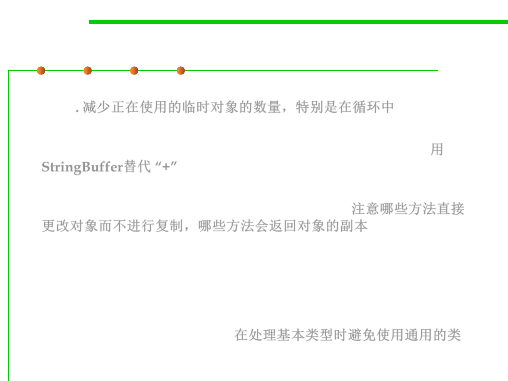

8.3 Code Tuning for Performance Optimization
Other general recommendations
▪ Reduce the number of temporary objects being used, especially in
loops. 减少正在使用的临时对象的数量，特别是在循环中
▪ Use StringBuffer in preference to the String concatenation
operator (+). This is really a special case of the previous point. 用
StringBuffer替代 “+”
▪ Be aware of which methods alter objects directly without making
copies and which ones return a copy of an object. 注意哪些方法直接
更改对象而不进行复制，哪些方法会返回对象的副本
– Any String method that changes the string (such as String.trim())
returns a new String object, whereas a method like Vector.setSize()
does not return a copy. If you do not need a copy, use (or create) methods
that do not return a copy of the object being operated on.
▪ Avoid using generic classes that handle Object types when you are
dealing with basic data types. 在处理基本类型时避免使用通用的类
– For example, there is no need to use Vector to store ints by wrapping them in
Integers. Instead, implement an IntVector class that holds the ints directly.